| Nombre | Posición | Edad | Bibliografía | Portada |
|---|---|---|---|---|
| Ken Sema | Extremo / Centrocampista | 26 |
Jugador del Pafos FC. Destacado por su velocidad, regate y capacidad de generar ocasiones de gol. |
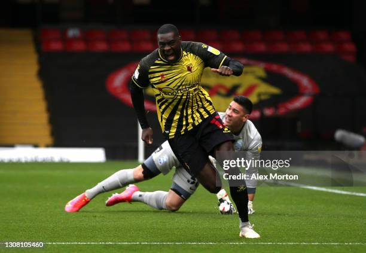 |
| Emil Holm | Defensa | 25 |
Defensa del Bologna FC. Sólido en marca y con buena salida de balón desde la defensa. |
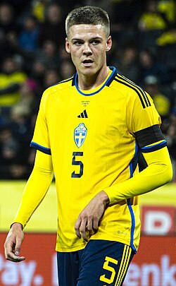 |
| Samuel Dahl | Centrocampista | 22 |
Centrocampista del SL Benfica. Joven promesa con gran visión de juego y recuperación de balón. |
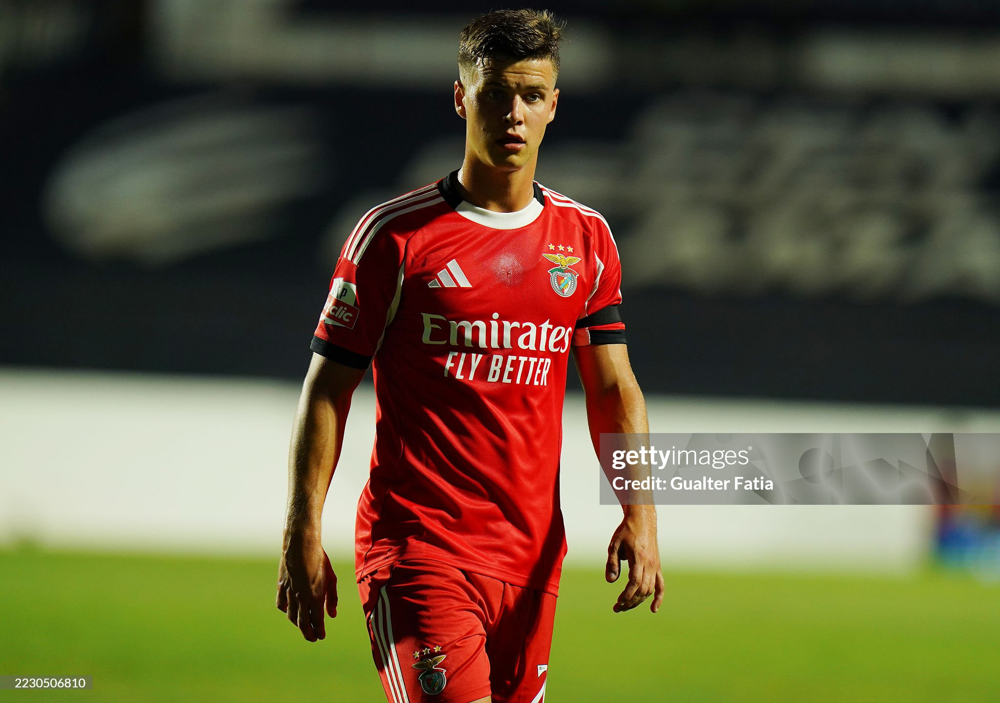 |
| Gabriel Gudmundsson | Defensa / Extremo | 26 |
Jugador del Lille OSC. Versátil, puede jugar en defensa o en ataque, destacando por su velocidad y centros precisos. |
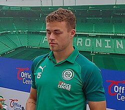 |
| Gustaf Lagerbielke | Defensa central | 25 |
Defensa del FC Twente. Firme en el juego aéreo y con gran anticipación defensiva. |
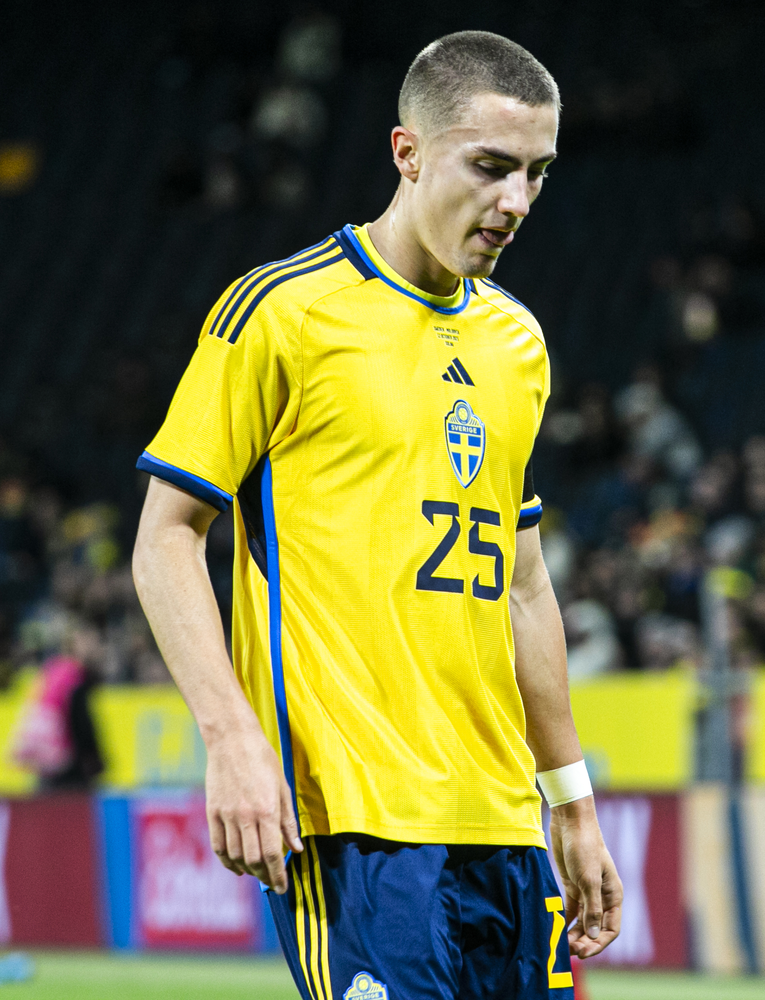 |
| Carl Starfelt | Defensa central | 30 |
Defensa del RC Celta. Destacado por su fuerza física, marca y liderazgo en la zaga. |
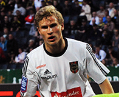 |
| Isak Hien | Defensa | 26 |
Defensa del Atalanta. Rápido y sólido, se destaca por su capacidad de recuperación y despejes precisos. |
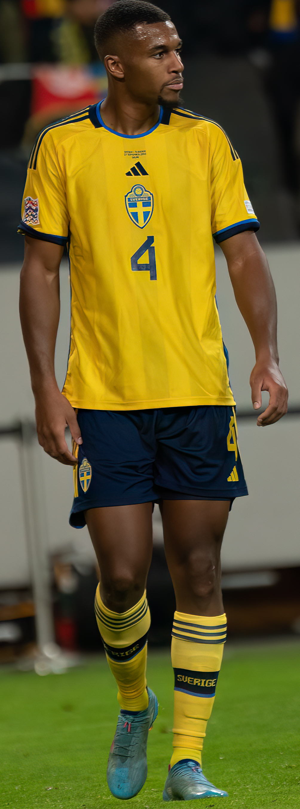 |
| Victor Lindelöf | Defensa central | 31 |
Defensa del Manchester United. Experiencia internacional, buena anticipación y salida de balón limpia. |
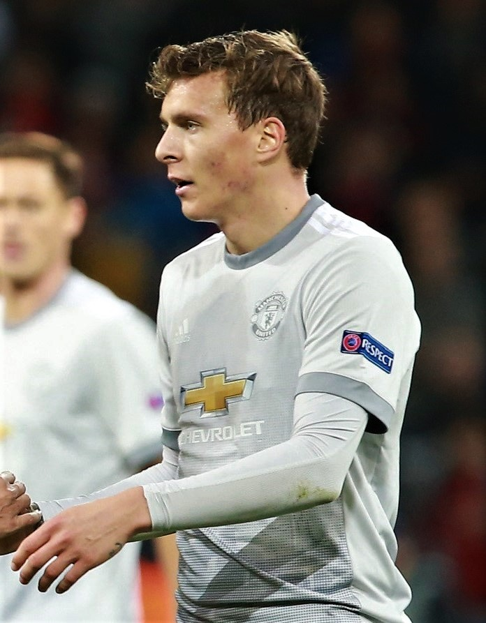 |
| Kristoffer Nordfeldt | Portero | 36 |
Portero del AIK Estocolmo. Seguro bajo los palos, con gran capacidad de reacción y liderazgo defensivo. |
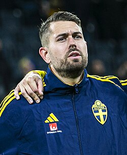 |
| Oliver Dovin | Portero | 23 |
Portero del Coventry City. Joven talento, ágil y con buena salida por alto. |
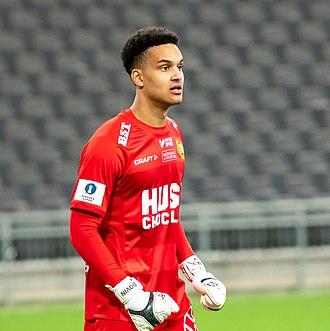 |
| Viktor Johansson | Portero | 27 |
Portero del Stoke City. Destaca por su reflejos y juego con los pies. |
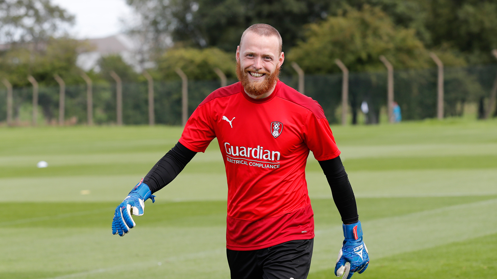 |
| Robin Olsen | Portero | 35 |
Portero del Aston Villa. Gran experiencia internacional y excelente en atajar tiros desde cualquier ángulo. |
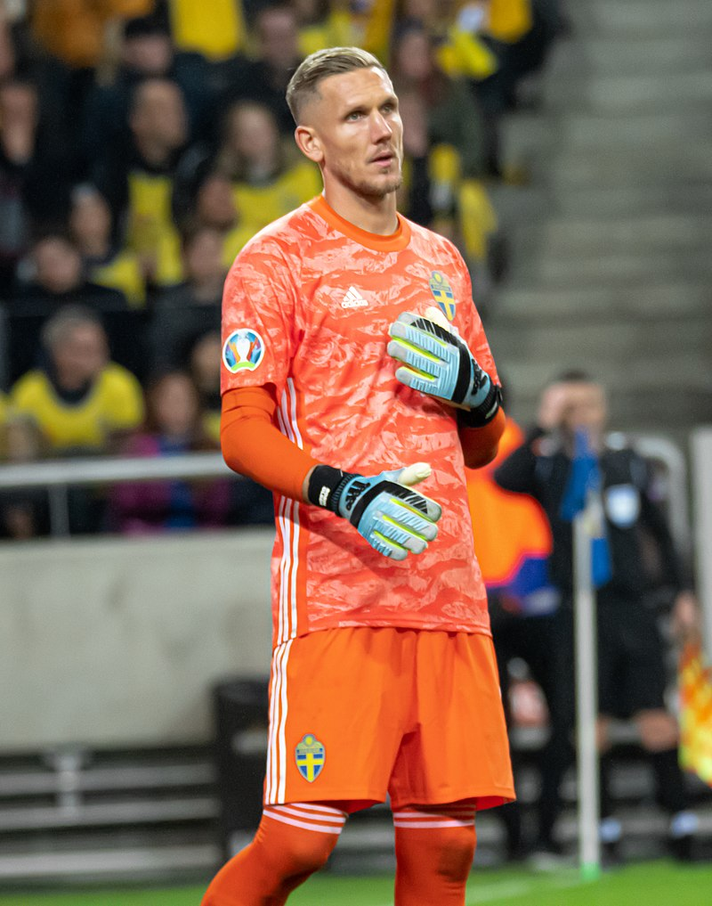 |